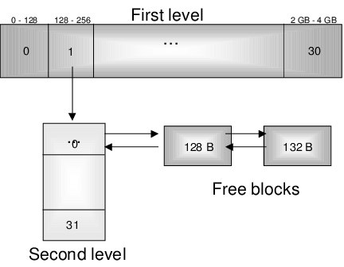

C and C++ have no built-in garbage collection, so the developer decides how and when to allocate and free memory. We can, of course, nod toward the STL and hiding allocations inside containers, but they don't go anywhere from that. It's just that where you used to have to think about an allocated chunk of memory, understand how it would affect frame time, remember that it had to be deleted (or maybe not, and it should be kept for the next frame), now everything is wrapped in sugary containers and development in the STL-will-swallow-anything style. The STL may indeed swallow it, and even churn along somehow, but you shouldn't rely solely on the system allocator, mindlessly calling new or malloc for every memory request. You do understand that a std::vector in the middle of a loop is a bad idea?
Besides, this practice leads to the expected performance problems even in ordinary applications, let alone high-load systems or games that aspire to something faster than 20 frames per second.
Trying to optimize code that uses system allocators is like raking leaves into a pile on a windy day: the pile gets raked, sure, but you constantly have to wave the rake to keep it in one place. Even if memory allocations happen sequentially, one after another, without any breaks, there's no guarantee these regions will be located even close to one another. As a result, when processing such data, the processor has to jump around different memory regions, wasting cycles just looking for data instead of working with it.
I'm by no means urging you to take the path of manual memory management, for it will be strewn with traps, rakes and prone to leaks. But the developer ends up facing a choice: either trust the system allocator and run into problems like smeared perf — where the code seems written correctly, fashionably and trendily, yet for some reason runs slowly — or take it all into your own hands, creating your own mechanisms for allocating and freeing resources.
Folks from HFT, Database, Automotive and Embedded systems can surely tell plenty of interesting stories about optimizing new/delete. Let me tell you a bit about various allocators in games?
This is part of the "Game++" series:
- Game++. String interning
- Game++. Cooking vectors
- Game++. Dancing with allocators <=== You are here
- Game++. Juggling STL algorithms
- Game++. run, thread, run...
- Game++. Building arcs
- Game++. Unpacking containers
- Game++. Heap? Less
- Game++. Work hard
- Game++. Patching patterns
- Game++. while (!game(over))
- Game++. Bonus. Performance traps
Many people find it hard to wrap their heads around memory-management paradigms. Programming languages (even my beloved C++), frameworks, engines, etc. increasingly try to hide this process behind a pretty facade and flashy names, like garbage collection (GC), reference counting (ARC, RC), RAII (Resource Acquisition Is Initialization), or ownership semantics.
(A small glossary, in case some words seemed unclear.)
Memory-management glossary
Manual management. Instead of an automatic garbage collector, you can explicitly allocate and free memory for objects. Requires careful tracking of allocation and deallocation operations and is still a source of bugs if done incorrectly. Games before the 2000s.
Reference counting (RC). We track the number of references to an object. Each time a reference is created or destroyed, the counter is updated. If the reference count reaches zero, the object is freed. Reference counting incurs additional overhead and also suffers from the cyclic-reference problem, when objects reference each other and their reference counts never reach zero. Games from the late 90s.
Automatic reference counting (ARC). Similar to reference counting, but tries to solve some of its problems with additional methods like retain and release operations to manage reference counts. Helps eliminate some cyclic-reference problems and reduce reference-counting overhead. Frostbite/Unity/CryEngine.
Ownership types. Static analysis is used for memory management. The ownership-type system tracks and enforces ownership relationships between objects, guaranteeing that memory is freed when it's no longer needed. Ownership types help eliminate some memory-related bugs and provide compile-time guarantees, but greatly complicate development and require additional annotations. Mostly Rust (Amethyst/Bevy/Fyrox/Godot).
Internal fragmentation. The amount of memory that was allocated but is unused inside a block. Occurs when the allocator allocates more memory than required. For example, an allocator can't allocate blocks smaller than 8 bytes or not a multiple of that size, so trying to allocate 13 bytes for an object leads to 2 × 8 = 16 − 13 = 3 bytes lost per object.
External fragmentation. The amount of memory that can't be used to allocate a requested amount, even though it's available in total. Occurs because of "holes." The allocator has 1000 bytes, the game requests blocks of 300, 500 and 200 bytes, then frees the first and last. There are two free blocks: 300 and 200 bytes. But when requesting anything above 300 bytes, the allocator can't allocate anything, even though 500 bytes are available in total.
Block, Header, Lifetime. Block: a fragment of allocated memory, which depending on context may or may not include a header and a tail. Lifetime: the total number of operations (indirectly, time) between allocate/deallocate for a specific block. Header/Tail: an internal data structure containing data about the block, creation time, size, header-check, etc. Adds overhead during memory management.
Garbage collector. An allocator that automatically provides memory as needed without having to explicitly free it after use. Instead, the garbage collector periodically checks which objects are still used by the application (i.e. "alive"). Described in detail in Jones and Lins's book (1987).
However, abstracting away from memory management costs more the more abstractions we've piled on top. Even among my colleagues I hear the "stack vs heap" memory dualism explained as something like: the stack automatically grows when a procedure is called, and the heap is some unlimited mechanism for obtaining memory that must persist throughout the life of the game.
But this approach to memory is wrong and forms a harmful, mistaken model in which the stack is perceived as "some" special form of memory and creates the illusion that the two types of memory work fundamentally differently. Physically, however, these are all the same regions of one address space.
The simplest and most vivid example, in my opinion, came from my OS-theory professor. The classroom had a bookcase and a bookshelf with books of different sizes. In one lecture on memory organization he called up a student and asked him to add and remove books in random order, without moving the remaining ones.
Over time, gaps formed between the books where new books no longer fit. And although initially all the books stood on the shelf, after about five minutes some of them ended up lying on the table. The experiment ended with a dramatic pushing-together of the books on the shelf and putting the rest back in place.
The same thing happens with memory: even if the total amount of free memory is sufficient, it may be so fragmented that the allocator can't find a contiguous block of the required size. Only collapsing memory isn't so simple, and sometimes outright impossible.
Another unpleasant effect of dynamic allocations — though not as noticeable, but no less harmful — is memory fragmentation, a problem that arises when the system allocator has to spend time looking for a suitable block among millions of others. This happens because small allocations (and frees) lead to holes, and memory starts to look like a puzzle with missing pieces.
This process not only takes memory away from the game itself but literally slows the program down at roughly a 1-to-1 ratio. That is, the more fragmented the memory, the slower the game runs. This holds for most standard allocators.
On average, for well-designed games the growth of memory fragmentation shouldn't exceed 2% per hour. There are dedicated load and fuzzing tests that let you determine how the heap "deteriorates" over time.
To avoid these effects, you have to look for alternative approaches to reduce fragmentation and preserve performance. Many kinds of allocators have been invented, each good in certain algorithms or conditions. And no, the perfect allocator doesn't exist.
The links may sometimes lead to adjacent topics that aren't always precisely about the relevant allocator, but the reading will definitely be interesting.
Linear allocator
This is one of the simplest and most efficient memory-management mechanisms, often used in situations where high performance and minimal overhead are required. Its operation resembles moving along a straight line: memory is allocated sequentially, with no way to free individual blocks until the entire allocated region is freed at once.
struct LinearAllocator {
void* base_pointer;
size_t size;
size_t offset;
void* allocate(size_t alloc_size) {
if (offset + alloc_size > size) return nullptr;
void* ptr = static_cast<char*>(base_pointer) + offset;
offset += alloc_size;
return ptr;
}
void reset() {
offset = 0;
}
};In game engines the linear allocator is often used for:
- Allocating memory for temporary data, for example for rendering a frame, since afterward it's no longer relevant. At the end of the frame all memory is freed and the allocator is reset.
- During physics computation (e.g. for collision or object movement) for temporary data. Since such objects are usually short-lived, with a lifetime of no more than a few frames, you keep the last N until the limit is reached, then copy them to the start and continue allocating a new tail.
- Particle systems (smoke, fire, explosions) also often use a linear allocator; such data lives only for one or two frames.
- When computing character animation, temporary data is created, such as bone transformation matrices or intermediate animation states.
- During sound processing (e.g. for reverberation effects, surround or sound wells) temporary buffers are created that become unneeded after being sent to the driver.
[ Memory start ] [ Memory end ]
|----------------------------------|
^ ^
start_ptr end_ptr
▼ After allocating memory ▼
|-----A-----B----C-------| |
^ ^ ^ ^
start_ptr current_ptr end_ptrRelated reading: molecular-matters: a linear allocator, Kashio/A5, bitsquid: custom memory allocation.
Step-back allocator
A variant of the linear allocator with the ability to remove the last allocated block, if it matches the one allocated last. Widely used in game engines for all sorts of text parsers (JSON, XML, KV) and generators, where high performance matters and a pattern of short-lived stack-type allocations shows up.
class StepBackAllocator {
public:
StepBackAllocator(size_t size)
: buffer(new char[size]), capacity(size), offset(0) {}
~StepBackAllocator() {
delete[] buffer;
}
void* allocate(size_t size) {
if (offset + size > capacity) {
return nullptr;
}
void* ptr = buffer + offset;
history.push_back(ptr); // Save the current position
offset += size;
return ptr;
}
void deallocate(void* ptr) {
if (history.empty()) {
assert("No allocations to deallocate.");
}
if (history.back() == ptr) {
// Roll the top pointer back to the previous position
history.pop_back();
}
}
void reset() {
offset = 0; // Reset the pointer to the start
history.clear();
}
private:
char* buffer; // Memory buffer
size_t capacity; // Total buffer capacity
size_t offset; // Current position in the buffer
std::vector<void*> history; // Allocation history
};Often used for:
- Text parsers (JSON, XML, KV): when you need to parse text data such as config files, level descriptions, metadata. Parsers work with short-lived temporary objects, on a "read — discard" model, which roll back well after processing.
- Procedural generation: in games with procedural generation, such as roguelikes, objects can be created and destroyed on the fly. A step-back allocator lets you avoid spending time freeing memory for such objects during world generation.
The downsides are significant — you have to remember it's "abnormal" memory. The main limitation is that freeing memory is possible only by the LIFO (Last In, First Out) principle, or the entire region at once. This can be inconvenient if you need to free memory in arbitrary order.
When working with such an allocator it's important to understand that memory for long-lived objects must be fixed. You can't store a pointer to an address from such an allocator, because at some point it'll be reset.
[ Memory start ] [ Memory end ]
|----------------------------------|
^ ^
start_ptr end_ptr
current_ptr = start_ptr
▼ After several allocations ▼
|-----A-----B----C-----------------|
^ ^ ^ ^
start_ptr │ current_ptr end_ptr
└─ (marker for B)
▼ After pop() of the last block (C) ▼
|-----A-----B|---------------------|
^ ^ ^
start_ptr current_ptr end_ptrFrame allocator
This is a specialized kind of linear allocator used for managing memory in cyclic or temporary algorithms, where data is often allocated and freed within a certain time (e.g. a frame, several frames, one turn, one second, etc.). They're especially good where high performance and minimal memory-management overhead are required, but their downside is a narrow application area.
The principle boils down to this: during one iteration (e.g. one turn in a turn-based strategy) memory is allocated sequentially, as in a linear allocator. The pointer moves forward with each allocation request. At the end of the frame (iteration) all allocated memory is freed at once, and the pointer is reset to the start of the memory block. The implementation won't differ at all from a linear allocator, we just add the ability to track when the cleanup happened.
class FrameAllocator {
void* base_pointer;
size_t size;
size_t offset;
uint32_t frame;
void* allocate(size_t alloc_size, uint32_t f) {
if (offset + alloc_size > size) return nullptr;
frame = f;
void* ptr = static_cast<char*>(base_pointer) + offset;
offset += alloc_size;
return ptr;
}
void reset() {
offset = 0;
}
};Frame 1:
[ A | B | C | ... free memory ... ]
^ ^
current_ptr end_ptr
▼ After frame 1 completes ▼
Frame 2:
[ D | E | ... free memory ... ]
^ ^
current_ptr end_ptr
▼ After frame 2 completes ▼
Frame 3:
[ F | G | H | ... free memory ... ]
^ ^
current_ptr end_ptrRelated reading: nfrechette: stack frame allocators, Srekel/sralloc.
Double-Frame allocator (Double-Buffered)
A further development of the frame-allocator idea. Two memory regions (for frames) are allocated and used in turn: in the current frame data is written to one region, and in the next frame that region is cleared and reused while data is written to the second region.
Good for data living within a single frame. It keeps all the qualities of a linear allocator, there's no cost for frequent allocation and freeing, and it's fairly easy to implement and use. Used for effects and inter-frame interpolation (e.g. smoothing camera or object movements, motion maps and checkerboard rendering).
class DoubleFrameAllocator {
FrameAllocator allocators[2];
uint32_t frame = 0;
public:
void* allocate(size_t size) {
return allocators[frame % 2].allocate(size);
}
void swapBuffers() {
allocators[currentAllocator].reset();
++frame;
}
};Among the downsides: memory can only be used for two frames, last frame's data stays in memory, you need twice as much memory, and half of it is always stale.
Frame N:
Pool 1 (active): [ A | B | C | ... free ... ]
Pool 2 (inactive): [ D | E | ... free ... ] ← Data from frame N-1
▼ After frame N completes ▼
Frame N+1:
Pool 1 (inactive): [ A | B | C | ... ] ← Data preserved for frame N+1
Pool 2 (active): [ F | G | ... free ... ]
▼ After frame N+1 completes ▼
Frame N+2:
Pool 1 (active): [ H | ... free ... ] ← Pool 1 reset, frame N data deleted
Pool 2 (inactive): [ F | G | ... ] ← Data preserved for frame N+2N-Frame allocator (Multi-Frame)
Extends the frame-allocator concept by creating several (N) memory regions for frames, used cyclically. Each frame uses one of these regions to place its data, while the rest remain available for reading. This approach is used if data from previous frames is needed for several frames, for example for deferred rendering or Motion Blur, Temporal AA effects.
The pros are the same — high allocation speed. There are more downsides: you need more memory for each of the N regions. Increasing the number of frames requires a more complex switching-synchronization mechanism, but in principle it stays simple to understand and implement.
The main downside is memory overconsumption. It's often inconvenient to store separate parts of a frame, and you have to store it whole, which for 4K resolutions requires storing substantial volumes. Although who counts these megabytes nowadays, when people started using 5K PNGs as backgrounds?
template<int N>
class NFrameAllocator {
FrameAllocator allocators[N];
uint32_t frame = 0;
public:
void* allocate(size_t size) {
return allocators[frame % N].allocate(size);
}
void nextFrame() {
allocators[currentAllocator].reset();
++frame;
}
};Related reading: gamedev.net: introduction to allocators and arenas.
Stack allocator
Another "golden" allocator, in the sense of simple and efficient, widely used in various systems where speed, predictability and minimal overhead matter. It's based on the stack principle, as the name suggests: memory is allocated and freed in strict LIFO (Last In, First Out) order, i.e. the last allocated memory block must be freed first.
On initialization the stack allocator gets a large contiguous memory block to be used for its internal work. The allocator keeps a pointer (or "stack top") that points to the start of the free memory region. When the program requests memory, the allocator moves the pointer forward by the size of the requested block and returns its starting address. Memory is freed in the reverse order of allocation.
To free a block, the pointer is moved back by that block's size. You can't reuse an arbitrary region (conventionally), but you can reset the whole stack at once.
class StackAllocator {
public:
StackAllocator(size_t size) {
buffer_ = std::malloc(size);
capacity_ = size;
current_ = buffer_;
}
~StackAllocator() {
std::free(buffer_);
}
void* allocate(size_t size) {
const size_t required_space = sizeof(Header) + size;
if (current_ + required_space > buffer_ + capacity_) {
return nullptr;
}
Header* header = (Header*)current_;
header->size = size;
current_ += sizeof(Header);
void* user_ptr = current_;
current_ += size;
return user_ptr;
}
void deallocate(void* ptr) {
if (!ptr) {
return;
}
char* user_ptr = static_cast<char*>(ptr);
Header* header = (Header*)(user_ptr - sizeof(Header));
if (user_ptr + header->size != current_) {
assert("free inproperly");
}
current_ = header;
}
private:
struct Header {
size_t size;
};
void* buffer_;
size_t capacity_;
void* current_;
};Works well for recursive algorithms, like pathfinding, graph processing, object hierarchies, and when the order and dependencies of memory objects are clearly defined.
As an example, take pathfinding (A*). In the classic implementation, temporary nodes are created for each step, which after the computation can be freed in reverse order of creation (there's always a link between A* nodes). Another example would be an event system, when events must be processed in the order they arrive (or the reverse). Or local algorithm stacks, for example when loading levels.
[ Memory start ] [ Memory end ]
|-------------------------------|
^ ^
start_ptr end_ptr
new A,B
|A|B|----------------------------|
^ ^
current_ptr end_ptr
delete B
|A|------------------------------|
^ ^
current_ptr end_ptr
delete A
|--------------------------------|
^ ^
current_ptr end_ptr
|---- exercise complete ---------|Advantages: fast allocation, minimal fragmentation, excellent data locality.
Related reading: mtrebi/memory-allocators, molecular-matters: a stack-like LIFO allocator.
Double-stack allocator
One of the most useful extensions of the previous allocator is what's usually called a double-ended stack allocator. It lets you allocate memory from both ends of the stack, which makes it possible to place different types of allocations on different stacks.
The best use for such an allocator is again loading levels and models. Both models and levels usually contain a set of data that fits well into sequential memory. Loading a level is itself a very costly operation, because it easily leads to significant fragmentation due to a large number of temporary objects.
class DoubleStackAllocator {
public:
DoubleEndedStackAllocator(size_t size)
: totalSize(size), start(nullptr), end(nullptr), current(nullptr), reverse(nullptr) {
start = malloc(size);
end = (char*)start + size;
current = start;
reverse = end;
}
~DoubleEndedStackAllocator() {
free(start);
}
void* allocateFromStart(size_t size) {
// Check for stack overflow from the start
if ((char*)current + size <= (char*)reverse) {
void* result = current;
current = (char*)current + size;
return result;
}
return nullptr; // Not enough memory
}
void* allocateFromEnd(size_t size) {
// Check for stack overflow from the end
if ((char*)reverse - size >= (char*)current) {
reverse = (char*)reverse - size;
return reverse;
}
return nullptr; // Not enough memory
}
void reset() {
current = start;
reverse = end;
}
private:
size_t totalSize;
void* start;
void* end;
void* current;
void* reverse;
};Imagine a case where during model loading we needed a temporary object A whose data is used in another object B. We can't free A because we need to generate data for B, and we can't free A after B because the LIFO principle won't allow it. A typical example of such fragmentation — we read the model config from an OWN/YAML/JSON file and create resources based on this config.
To avoid temporary allocations from the config, we'll place them at one edge of the stack and the main objects at the other. Until the two heads meet during loading, we'll have as much memory as with a simple stack allocator, but the main objects' memory won't be riddled with small config objects.
[ Long ] level [ Short ] config
|-------------------------------|
^ ^
lg_ptr sh_ptr
new(l) A, new(s) B
|A|---------------------------|B|
^ ^
lg_ptr sh_ptr
new(s) C
|A|-------------------------|C|B|
^ ^
lg_ptr sh_ptr
new(l) D (delete C, B) -- loading done, config allocations removed
|A|D|---------------------------|
^ ^
lg_ptr sh_ptr
for an ordinary allocator
|A|B|C|D|-----------------------|
^ ^
ptr end_ptrPointed Double-Stack Allocator
There's a small variation of the two-stack allocator, when they grow from some point in a shared buffer. In this case memory is allocated not from the two ends, but expanding in both directions. Again, this approach lets you efficiently manage memory for different types of objects that may have different lifecycle requirements. For example, objects that must be active throughout the level's operation can be allocated on one side, and temporary objects on the other.
The main advantage of such an allocator is the ability to dynamically manage different types of allocations while minimizing the chance of overflow or conflicts between them. An implicit advantage: the memory block of one of the allocators that grows "forward" can be reallocated, if there's free space, without physically moving it.
The downside of this approach is the need for upfront memory-usage profiling and tuning, and in most cases it can be replaced with a pair of ordinary stack allocators.
config [Short ][ Long ] level
|--------------|----------------------------|
^ ^
sh_ptr lg_ptr
new(l) A, new(s) B
|------------|B|AAAAAAAAAAAAAAAAAAA|--------|
^ ^
sh_ptr lgh_ptr
new(s) C, new(l) D
|----------|C|B|AAAAAAAAAAAAAAAAAAA|--------|
^ ^
sh_ptr lgh_ptr
not enough for D -> realloc(long)
|----------|C|B|AAAAAAAAAAAAAAAAAAA|DDDDDDDDDDDDDDDDDDD|-----|
^ ^
sh_ptr lgh_ptr
delete C, delete B
|--------------|AAAAAAAAAAAAAAAAAAA|DDDDDDDDDDDDDDDDDDD|-----|
^ ^
sh_ptr lgh_ptrPool allocator
Smart people sat down, looked at the linear allocator and thought: what if we make an allocator for a specific object right away? Say we have 32 NPCs in our game city, we create them when the player approaches the city. Why use general-purpose allocators for a group of objects, increasing the entropy of the universe?
That's roughly how pool allocators came to be, allocating memory in equal-sized blocks, which completely removes fragmentation for a specific group of objects and (in theory) should speed up allocation/freeing. In the ideal case this should remove the cost of recreating objects entirely, because it becomes possible to reuse existing ones.
On initialization such an allocator reserves a large chunk of memory in a single call and divides it into equal parts — blocks. On a memory request it returns the first free block (O(1)), and on freeing it adds the block back to the list.
class PoolAllocator {
struct Block {
Block* next;
};
void* memoryPool; // Allocated memory
Block* freeList; // List of free blocks
size_t blockSize; // Size of one block
size_t totalBlocks; // Total number of blocks
public:
PoolAllocator(size_t objectSize, size_t numObjects) {
// Size the block for alignment and pointer size
blockSize = (objectSize < sizeof(Block)) ? sizeof(Block) : objectSize;
totalBlocks = numObjects;
// Big block
memoryPool = std::malloc(blockSize * totalBlocks);
// Small blocks
freeList = static_cast<Block*>(memoryPool);
Block* current = freeList;
for (size_t i = 0; i < totalBlocks - 1; ++i) {
current->next = reinterpret_cast<Block*>(reinterpret_cast<char*>(current) + blockSize);
current = current->next;
}
current->next = nullptr;
}
~PoolAllocator() {
std::free(memoryPool);
}
void* allocate() {
if (!freeList) return nullptr; // Pool empty
Block* allocatedBlock = freeList;
freeList = freeList->next;
return allocatedBlock;
}
void deallocate(void* ptr) {
if (!ptr) return;
Block* freedBlock = static_cast<Block*>(ptr);
freedBlock->next = freeList;
freeList = freedBlock;
}
};Advantages: fast allocation/freeing, minimal fragmentation, predictable execution time — useful for objects that are created and destroyed en masse and frequently, e.g. bullets, effects, particles, game entities.
Among the downsides are the fixed block size and the relative non-universality of pools: if objects are of different sizes, you need different pools. And you have to do upfront pool tuning to reduce redundancy when blocks aren't fully used.
Related reading: endurodave/Allocator, dmitrysoshnikov: writing a pool allocator, gingerbill: pool allocator.
Free List Allocator
Other wise people looked at the pool allocator and thought you could make a pool that divides the provided memory into equal-sized blocks and tracks which of them are free. The pool allocator is good because it lets you free memory in arbitrary order in constant time O(1), while creating minimal fragmentation. But what's inconvenient is the equal-sized blocks — so what if we add a size to the block?
Thus the free list allocator was born, which, compared to the previous one, imposes no restrictions on block size. You can allocate and free memory in arbitrary order and of any size, but of course you pay for it. Due to its nature this allocator's performance is lower, but other wise people solved that problem too — more on that later.
It works simply and quickly. Each free block contains metadata (size, pointer to the next block). On allocation, a block matching the size is searched for in the list (there are various strategies: first-fit, best-fit, worst-fit, next-fit). If the found block is too big, it's split into two parts — the allocated memory and the remainder, which is added back to the list. On freeing, the block is returned to the list and its adjacent free blocks are merged to reduce fragmentation.
The code here is already fairly substantial, so I'll leave a link to one of the implementations (mtrebi/memory-allocators: FreeListAllocator.cpp).
On the good side: lets you allocate and free memory blocks in arbitrary order (unlike a stack allocator), tries to reduce fragmentation by merging free blocks; there are options for customization and tuning.
On the bad side: metadata appears for each block; over time small disconnected blocks unsuitable for large requests will still appear; wherever lists and arrays appear, problems with searching and merging blocks begin, requiring careful implementation.
[Memory Pool]
|-------------------------------| ← The whole pool is one free block
↑
free_list (size=100, next=nullptr)
|##########|--------------------| ← Block split (object 1)
↑ ↑
Allocated Remaining Free Block
(size=40) (size=56, next=nullptr)
|##########|########|-----------| ← Created object 2
↑ ↑ ↑
Alloc1 Alloc2 Free Block
(size=40) (size=20)(size=32)
|----------|########|-----------| ← Deleted object 1
↑ ↑ ↑
Free Alloc2 Free
(size=40) (size=20)(size=32)
|----------|########|###########| ← Created object 3, doesn't fit in free block 1
↑ ↑ ↑
Free Alloc2 Alloc3Related reading: gingerbill: free list allocator, embeddedartistry: implementing malloc.
Arena Allocator (Region-Based Allocator)
What happens if you split one big linear allocator into several smaller ones and tie cleanup to the number of objects? We get a very interesting capability — automatically resetting the current region if no live objects remain in it (all the gladiators have died, the arena is ready to take new ones).
To implement it you'll need to track an object counter for that region. An arena allocator (region allocator) is a memory-management strategy in which memory is allocated in sufficient blocks (arenas) and freed automatically when no objects remain in the arena.
A good choice for algorithms and logic where object lifetimes are predictable and grouped (e.g. request processing, data parsing, game frames), but large enough that they can't be placed in a single linear allocator.
// Arenas with an object counter
struct Arena {
void* memory; // Pointer to the memory block
size_t size; // Total arena size
size_t used; // Memory used
int active_objects; // Active-object counter
Arena(size_t block_size)
: memory(malloc(block_size)), size(block_size), used(0), active_objects(0) {}
~Arena() {
free(memory);
}
bool can_allocate(size_t size, size_t alignment) const {
size_t adjust = alignment - (used % alignment);
adjust = (adjust == alignment) ? 0 : adjust;
return (used + adjust + size) <= this->size;
}
};
class ArenaAllocator {
private:
std::vector<std::unique_ptr<Arena>> arenas;
size_t default_arena_size;
public:
ArenaAllocator(size_t default_size = 4096)
: default_arena_size(default_size) {}
// Allocate memory bound to an arena
void* allocate(size_t size, size_t alignment = alignof(std::max_align_t)) {
// Find an arena with enough free space
for (auto& arena : arenas) {
if (arena->can_allocate(size, alignment)) {
return allocate_in_arena(*arena, size, alignment);
}
}
// Create a new arena if none is suitable
auto new_arena = std::make_unique<Arena>(default_arena_size);
arenas.push_back(std::move(new_arena));
return allocate_in_arena(*arenas.back(), size, alignment);
}
// Free an object (decrements the counter and resets the arena if needed)
static void deallocate(void* ptr) {
Arena* arena = get_arena_from_pointer(ptr);
arena->active_objects--;
// If no objects remain, reset the arena
if (arena->active_objects == 0) {
arena->used = 0; // Memory ready for new allocations
}
}
private:
// Internal allocation in a specific arena
void* allocate_in_arena(Arena& arena, size_t size, size_t alignment) {
size_t adjust = alignment - (arena.used % alignment);
adjust = (adjust == alignment) ? 0 : adjust;
assert(arena.used + adjust + size <= arena.size && "Arena overflow");
void* ptr = static_cast<char*>(arena.memory) + arena.used + adjust;
arena.used += adjust + size;
arena.active_objects++;
return ptr;
}
// Get the arena from a pointer (object header)
static Arena* get_arena_from_pointer(void* ptr) {
return reinterpret_cast<Arena*>(static_cast<char*>(ptr) - sizeof(Arena*));
}
};As you may have noticed, the arena doesn't store a list of objects; on allocation the pointer is created offset by the size of the pointer to the arena. This lets you, when deleting an object from such an allocator, step back from the pointer by the pointer size and get the arena's address, where you decrement the counter. When it reaches 0, we consider all the gladiators on the arena dead and it can be reused; if the arena's memory ran out, we create a new arena.
Related reading: gingerbill: arena allocator, tsoding/arena.
Segregated Allocator
Again, this is yet another attempt to squeeze more out of the linear allocator, closer to a memory-management strategy. We add logic to the allocator that automatically divides memory into several large pools (segments), each intended to allocate blocks of a certain size.
To avoid going too fine-grained, we'll create pools for objects no smaller than 16 bytes and multiples of that size — this approach gives all the advantages of a linear allocator and small pool-management costs. The allocator always knows which segment to look in for a suitable block: on a memory request the block size is determined, if it matches one of the segments the allocator takes a block from the corresponding pool, and if the pool has no free blocks or there's no suitable pool, a new one is allocated.
+-------------------+ +-------------------+ +-------------------+
| Pool 16 bytes | | Pool 32 bytes | | Pool 64 bytes |
| [ ][ ][ ]... | --> | [ ][ ]... | --> | [ ]... |
+-------------------+ +-------------------+ +-------------------+In Unreal Engine/CryEngine such allocators are used to manage memory for level objects. A good allocator that, with the right approach, lets you avoid holes, allocates a free block in O(1), and places objects of the same type next to each other, improving caching. Among the downsides is partial filling of the pools themselves.
As practice in CryEngine shows, it lets you achieve stable (not necessarily good, but predictable) performance even on weak hardware. However, its efficiency directly depends on correct segment tuning and analysis of memory-usage patterns.
Under certain allocation and freeing patterns it can suffer from high fragmentation. For example, in Crysis trees were implemented as trunks, with random generation of branch positions, sizes and leaves. Various base branch shapes with different triangle counts (from 1 to 6) were used to optimize performance, and the inner parts of trees were filled with simple single-triangle branches to create density.
Unlike SpeedTree, which generates trees procedurally, Crysis used manual modeling combined with shaders to achieve high quality, but this approach overloaded the mechanism and caused a heavy FPS drop in forests (where each tree was a separate object).
(The video about Crysis vegetation can be watched in the original article on Habr.)
In CryEngine2 the Merged Mesh system appeared, which combined separate vegetation objects into batches to reduce draw calls, plus a LOD system, which allowed more efficient rendering of large volumes of vegetation — but that's another story and other allocators.
Related reading: GPU Gems 3: Vegetation in Crysis, giamo/segregated-fits-memory-allocator.
Buddy allocator
A memory-management algorithm developed in the 1960s for operating systems and file storage. The principle was described in works on "portfolio theory" by Harry Markowitz, an American economist, and later in the works of Kenneth C. Knowlton as a way to combat external memory fragmentation. The main idea is dividing memory into blocks whose sizes are powers of two (e.g. 64, 128, 256 bytes). On allocation a block is split into two equal "buddies," and on freeing it's merged back. The process continues up the levels as long as merging is possible.
The buddy allocator is often used in game engines for managing resources where fast long-term allocation with minimal fragmentation is required: textures and meshes (resources often have power-of-two sizes — 512×512, 1024×1024; in Unreal Engine it's used to manage video memory), sound buffers, physics objects (colliders and data in Havok), long-lived level objects, spatial objects and an octree for partitioning level space (e.g. in id Tech 4, Doom 3).
Level 0: [Free]
[===================================] ← Block of 1024 bytes (2^10)
^
Request to allocate 256 bytes (2^8)
[=================|=================] ← Level 1: 2 blocks of 512B
[########| | | ] ← Level 3: 1 block taken (256B)
^
Allocated memory
Request to allocate 128 bytes (2^7)
[=================|=================] ← Level 1: 2 blocks of 512B
[########| | | ] ← Level 3: 1 block taken (256B)
[########|####|...|........|........]
^
Allocated 128B
Freeing the 256B block
[........|####|...|........|........]
^
Taken 128BRelated reading: Wikipedia: Buddy memory allocation, gingerbill: buddy allocator, bitsquid buddy allocator design.
Thread-Cache Allocator
As is probably clear from the name, this is a memory-management strategy aimed at minimizing contention for resources between threads. System new/malloc interacts with the operating system to allocate and free memory. When an application requests memory, in the worst case it has to compete for resources with other applications. First it checks whether there's free memory in the process's internal pools, and if there isn't enough, it goes through brk/VirtualAlloc system calls that request memory from the OS kernel.
A TC allocator moves memory work to the level of an individual thread, giving each its own memory pool. Besides getting rid of system new/malloc, it also reduces synchronization costs between threads.
In the ideal case each thread has its own memory pool, which lets you avoid locks and reduce synchronization overhead. If the local pool is exhausted, the allocator turns to a shared pool between threads (if there is one), and if that's gone too, it falls back to the standard new/delete mechanisms. To reduce possible overhead, requested memory isn't returned to the process but stays in the thread's local pool.
class ThreadCacheAllocator {
public:
ThreadCacheAllocator() {
// Initialize the central heap
}
void* allocate(size_t size) {
// Get the local cache for the current thread
auto& cache = getThreadCache();
// Is there free memory in the local cache?
if (cache.freeList.empty()) {
// If the cache is empty, request memory from the central heap
cache.freeList = fetchFromCentralHeap(size);
}
// Allocate memory from the local cache
void* ptr = cache.freeList.back();
cache.freeList.pop_back();
return ptr;
}
void deallocate(void* ptr, size_t size) {
// Return memory to the local cache
auto& cache = getThreadCache();
cache.freeList.push_back(ptr);
}
private:
struct ThreadCache {
std::vector<void*> freeList; // List of free memory blocks
};
// Get the local cache for the current thread
ThreadCache& getThreadCache() {
thread_local ThreadCache cache;
return cache;
}
// Request memory from the central heap
std::vector<void*> fetchFromCentralHeap(size_t size) {
std::lock_guard<std::mutex> lock(heapMutex);
std::vector<void*> blocks;
// Allocate several memory blocks
for (int i = 0; i < 10; ++i) {
void* block = malloc(size);
blocks.push_back(block);
}
return blocks;
}
std::mutex heapMutex; // Lock for synchronizing access to the central heap
};Where it's used:
- Multithreaded rendering: such allocators let each thread allocate memory for vertices, textures and other data without contending for resources. Unreal Engine uses TCMalloc.
- Multithreaded physics: collision or object-movement processing. PhysX uses its own Thread-Cache allocator.
- Multithreaded animation: Frostbite (EA's engine) has a multithreaded animation manager that uses a separate allocator.
There are plenty of downsides too: the biggest is the implementation complexity compared to simple allocators, and the need to follow strict rules when working with it. Not all algorithms allow working in this mode. Thread-Cache allocators have large overhead, especially if large memory blocks are used. High risk of leaks and other problems with careless use.
Related reading: mjansson/rpmalloc, tcmalloc design.
Fibonacci allocator
This allocator uses the Fibonacci sequence to manage memory blocks. Fibonacci numbers are a sequence where each number equals the sum of the two previous ones: 1, 1, 2, 3, 5, 8, 13, 21, 34 and so on. These numbers are used to determine memory-block sizes, which minimizes fragmentation and shows better results when working with natural-language strings. Fragmentation on such data with a Fibonacci allocator is 40% lower than with the default one, and almost 80% lower compared to a buddy allocator.
Natural-language sentences have varying lengths, but their sizes often fall into certain ranges (short words, phrases or sentences). Fibonacci numbers match these ranges better than powers of two, minimizing internal fragmentation. Also, Fibonacci numbers grow more slowly than powers of two, which makes them suitable for memory distribution when small and medium volumes (up to 2 KB) predominate.
class FibonacciAllocator {
public:
FibonacciAllocator() {
// Free blocks
for (size_t size : fibonacciSizes) {
freeBlocks[size] = std::vector<void*>();
}
}
void* allocate(size_t size) {
// The nearest Fibonacci number greater than or equal to the requested size
size_t fibSize = findFibonacciSize(size);
// Are there free blocks of the right size?
if (!freeBlocks[fibSize].empty()) {
void* ptr = freeBlocks[fibSize].back();
freeBlocks[fibSize].pop_back();
return ptr;
}
// No free blocks, allocate a new one
void* ptr = malloc(fibSize);
if (!ptr) {
throw std::bad_alloc();
}
return ptr;
}
void deallocate(void* ptr, size_t size) {
size_t fibSize = findFibonacciSize(size);
// Return the block
freeBlocks[fibSize].push_back(ptr);
}
private:
std::vector<size_t> fibonacciSizes = {1, 2, 3, 5, 8, 13, 21, 34, 55, 89, 144};
// List of free blocks for each size
std::unordered_map<size_t, std::vector<void*>> freeBlocks;
size_t findFibonacciSize(size_t size) {
for (size_t fibSize : fibonacciSizes) {
if (fibSize >= size) {
return fibSize;
}
}
assert(false); // Requested block too large
}
};Related reading: dev.to: generalized Fibonacci memory allocator, naens/mem_alloc.
Compacting allocator
Memory fragmentation is one of the sore subjects in long-lived applications, not just games. No matter how good a general-purpose allocator is, over time allocation and freeing lead to "holes" and reduce memory-usage efficiency. For the current generation of games and consoles, 5% fragmentation in the first hour of play and +2% for each subsequent hour is acceptable. That's 7% of, say, 16 GB that the game occupied — how much is that in the worst case? 16 GB × 0.07 = 1.12 GB; my PC had less than that some 10 years ago. And on consoles you can't lose even 1 GB; there the count sometimes goes in 10 megabytes.
Such an allocator should solve this problem by periodically moving objects in memory, gathering free space into a single block, moving objects so that all occupied blocks are contiguous. It somewhat resembles hard-disk defragmentation, but performed in software and in real time.
void rminit(void *heap, size_t heap_size);
handle_t rmmalloc(size_t nbytes);
void rmfree(handle_t *handle);
void *lock(handle_t handle);
void unlock(handle_t handle);
void compact(uint32_t compact_time_max_ms);Here handle_t is an opaque type that lets you obtain the actual memory pointer associated with the handle. For that you need to call an additional function lock(), which returns an ordinary memory pointer. Examples include Unity and Godot, which use compaction not only at the .NET level but also for some internal engine structures. Downsides — pauses during compaction, an extra layer of abstraction and performance losses, handles instead of pointers.
Related reading: plasma-umass/Mesh, mmtk/mmtk-core, ivmai/bdwgc.
Hot/Cold splitting allocator
Entities and objects in games contain hundreds of fields, of which only 10–20% are actively used and updated every frame, while the rest sit as dead weight in memory, updated once every few seconds or even once per session. The idea is to hint to the compiler which properties will be updated more often than others, so it automatically places them closer to the start of the object in memory (if these are POD structures) or in special regions — cold and hot storage respectively.
struct Entity {
// Hot data (updated every frame)
[[hot]] Vec3 position;
[[hot]] Matrix rotation;
[[hot]] float health;
// Cold data (updated rarely)
[[cold]] xstring configPath;
[[cold]] TextureID legacyTexture;
};In C++ the programmer can move this data around so it's closer to the start of the object, but because of object hierarchy this can't always be done optimally.
So far only Bungie has been spotted in such research, with their Destiny 2: advances.realtimerendering.com/destiny, GDC: Multithreading the Entire Destiny.
TLSF (Two-Level Segregated Fit)
Probably the best and very fast general-purpose allocator for games I've had to work with (used in Uncharted, Metro, Halo, Horizon, Mafia, The Witcher 3). The allocator returns the smallest memory block that's big enough to hold the object. Since most objects occupy memory blocks in a limited size range, the Best-Fit strategy (or its simplified version — Good-Fit) usually leads to the least memory fragmentation under real loads compared to other approaches such as First-Fit.
How it works: we divide our memory into two levels — a memory class (a power of two), which lets you quickly determine which class the requested size belongs to. Then within each class memory is divided into subcategories, e.g. for the 128–256 byte class let's have 128–160, 161–200, 201–232, 233–256.
Then a bitmask is used for searching, to understand whether there are free blocks in a certain category. For example, if the 128–256 byte category has free blocks, the corresponding bit will be 1. This lets you quickly find the right class and descend to the second level, where another bitmask determines the refined size. A nominal 202 bytes falls into the third subcategory, from which the first free block is returned. No re-iterations.

- Each list contains free blocks whose sizes fall within one size class (range).
- Blocks within each list aren't ordered, which simplifies and speeds up operations.
- The Good-Fit strategy lets you implement an efficient and predictable memory-management algorithm.
- Free-block search operations run in O(1), thanks to organizing memory into size classes in advance.
A small benchmark I ran for allocators on one of the projects, just to get a sense of the speed (in CPU cycles):
Size malloc malloc DL's Binary TLSF
(First-Fit) (Best-Fit) malloc Buddy
128 25636 112566 7376 4140 155
243 22124 91216 5660 4448 168
512 15974 82162 5445 4248 159
4097 14743 65661 3346 4135 162Related reading: rmind/tlsf, gii.upv.es/tlsf, reverberate: one malloc to rule them all.
That's it?
No, of course not. These are just the ones I happened to run into on projects. Will you share your own experience working with allocators?
← All articles